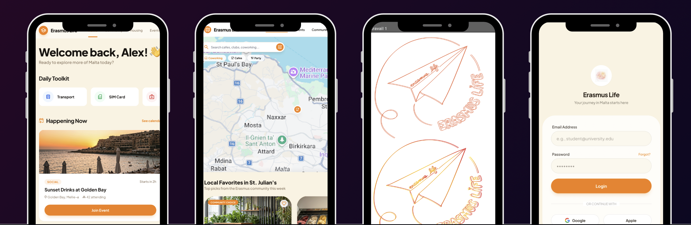

"A mobile platform designed for international exchange students — housing, events, community, and paperwork, all in one intuitive app."

Our project focuses on the development of 'Erasmus Life,' an app designed to help students integrate into their host country. Arriving in a new country is an exciting adventure, but it can also lead to isolation and a loss of landmarks.
Inspired by Inès’s own exchange experience, we decided to tackle this human challenge together. We created a solution that centralizes everything a student needs in an interface as simple as a social media feed.
Living the city: To get off the beaten track, the app proposes a curated selection of cafés, coworking spaces and nightlife spots favoured by locals and students.
Breaking the ice: The heart of the project is social. Dedicated features foster meetings and exchanges between international students to quickly create a circle of friends.
Getting active: A feature to discover local events (concerts, conferences). More than a simple agenda, the tool allows users to become actors by creating and managing their own events.
Daily life simplified: Includes local vocabulary support, contextual translation, flat-sharing management and an AI assistant to answer user queries and remove practical barriers.